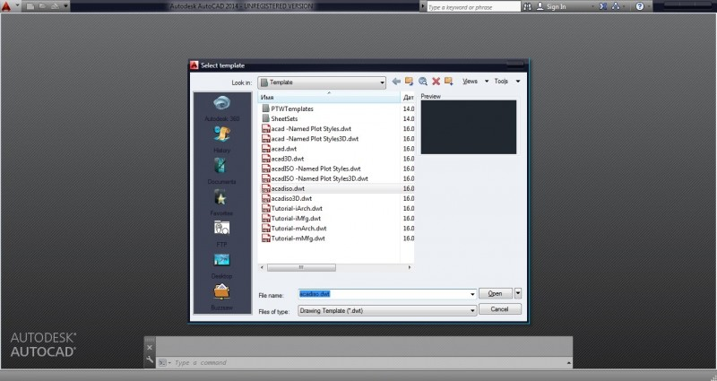
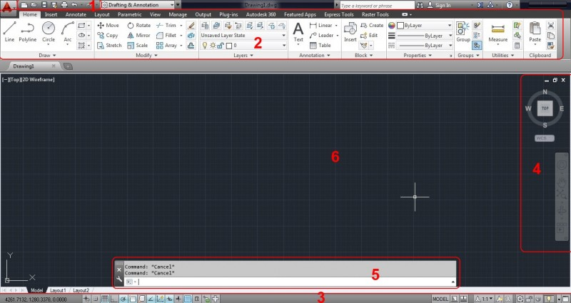
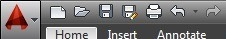
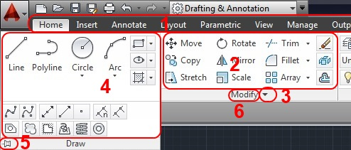
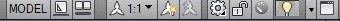
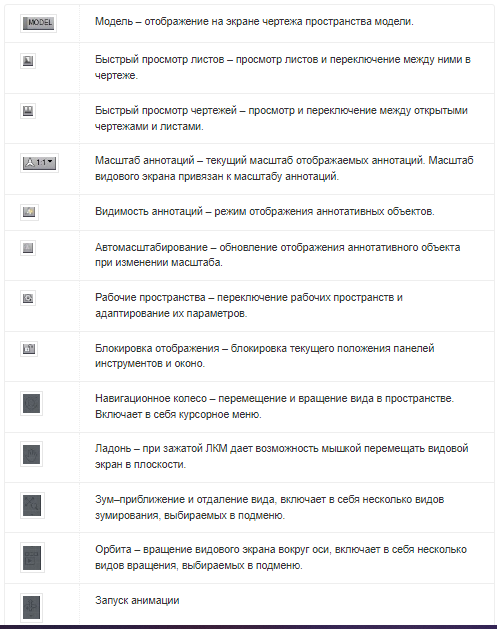
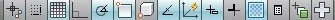
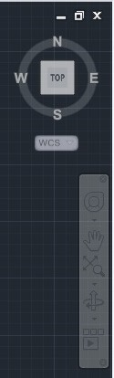
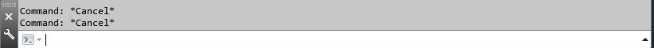

Лекция 1: Знакомство со средой AutoCAD. Знакомство с интерфейсом, создание рабочего документа
AutoCAD – система автоматизированного проектирования, разработанная компанией Autodesk, является системой CAD и включает в себя инструменты 2D 3D моделинга. Данный урок посвящен изучению интерфейса программы и опирается на самую последнюю версию AutoCAD 2014.
При создании нового рабочего документа, программа выдаст запрос на выбор шаблона оформления интерфейса. При этом стоит учесть, что AutoCad в одном рабочем файле способен содержать как плоские фигуры, так и объемные, а так же целые группы отдельных друг от друга 3D элементов, что дает ему некое преимущество по отношению с другими программами 2D и 3D моделинга. В данном уроке мы остановимся на оформлении которое в AutoCAD стоит по умолчанию – acadiso. Интерфейс программы состоит из:
1. Панель быстрого доступа
2. Лента
3. Строка состояния
4. Видовая панель
5. Командная строка
6. Рабочее поле
1. Панель быстрого доступа
По умолчанию включает в себя стандартный набор наиболее часто используемых команд: «Создать», «Открыть», «Сохранить», «Печать», «Отменить» и «Повторить». Программа предоставляет возможность самостоятельно задать команды и инструменты выводимые на панель быстрого доступа ?
2. Лента
Структура ленты состоит из вкладок, содержащих несколько панелей каждая, которые в свою очередь включают в себя инструменты и элементы управления. По умолчанию лента расположена в верхней части окна. AutoCAD предоставляет возможность пользователю самостоятельно редактировать внешний вид ленты, а также делать панели плавающими, открепляя их от ленты. Основные элементы Ленты
1.Вкладка – включает в себя сгруппированные панели. Очередность расположения вкладок на ленте можно изменять.
2.Панель – Содержит набор инструментов.
3.Кнопка развертывания – Развертывает панель для отображения дополнительных инструментов.
4.Развернутая панель.
5.Булавка – по умолчанию отключена, в таком режиме развернутая панель автоматически сворачивается при отводе от нее курсора. При включенной булавке, развернутая панель не сворачивается.
6.Название панели.
3. Строка состояния
Строка состояния включает в себя значки для быстрого доступа и управления чертежными средствами. При помощи контекстного меню, открываемого щелчком ПКМ по полю строки, можно переключать вид отображения строки – знаки или текстовые метки.
Ниже приведено описание основных инструментов строки состояния В левой части строки находятся значки управления и доступа чертежными средствами: «Привязка», «Сетка», «Вес линий», «Динамический ввод».
4. Видовая панель
Видовая панель является модулем управления видового окна и включает в себя:
Гизмо бокс – предназначен для перемещения и вращения вида в пространстве. Включает в себя возможность выбора стандартных проекционных видов.
Меню выбора системы координат.
Меню видовых инструментов:
5. Командная строка
Командная строка в текстовом режиме отображает все производимые операции пользователя. А так же дает возможность текстового ввода команд и использования подменю команд в текстовом режиме.На этом знакомство со стандартным интерфейсом AutoCAD законченно, в следующем уроке мы подробней рассмотрим работу с со стандартной системой координат, создание пользовательской системы координат, а так же систему динамического ввода.
На этом знакомство со стандартным интерфейсом AutoCAD законченно, в следующем уроке мы подробней рассмотрим работу со стандартной системой координат, а так же методы ввода команд.